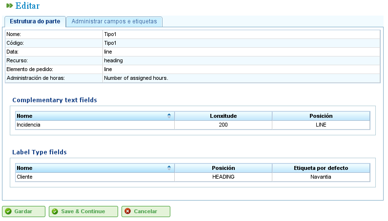

Raporty pracy
Contents
Raporty pracy umożliwiają monitorowanie godzin, które zasoby poświęcają na zadania, do których są przydzielone.
Program pozwala użytkownikom konfigurować nowe formularze do wprowadzania poświęconych godzin, określając pola, które mają pojawiać się w tych formularzach. Umożliwia to uwzględnianie raportów z zadań wykonywanych przez pracowników oraz monitorowanie ich aktywności.
Zanim użytkownicy będą mogli dodawać wpisy dla zasobów, muszą zdefiniować co najmniej jeden typ raportu pracy. Ten typ określa strukturę raportu, w tym wszystkie wiersze, które są do niego dodawane. Użytkownicy mogą tworzyć tyle typów raportów pracy, ile jest to konieczne w systemie.
Typy raportów pracy
Raport pracy składa się z serii pól wspólnych dla całego raportu oraz zestawu wierszy raportu pracy ze specyficznymi wartościami dla pól zdefiniowanych w każdym wierszu. Na przykład zasoby i zadania są wspólne dla wszystkich raportów. Mogą jednak istnieć inne nowe pola, takie jak „zdarzenia", które nie są wymagane we wszystkich typach raportów.
Użytkownicy mogą konfigurować różne typy raportów pracy, aby firma mogła projektować swoje raporty zgodnie ze swoimi specyficznymi potrzebami:

Typy raportów pracy
Administrowanie typami raportów pracy pozwala użytkownikom konfigurować te typy i dodawać nowe pola tekstowe lub opcjonalne tagi. Na pierwszej zakładce edycji typów raportów pracy możliwe jest skonfigurowanie typu dla obowiązkowych atrybutów (czy dotyczą całego raportu, czy są określane na poziomie wiersza) oraz dodanie nowych opcjonalnych pól.
Obowiązkowe pola, które muszą pojawić się we wszystkich raportach pracy, są następujące:
- Nazwa i kod: Pola identyfikacyjne dla nazwy typu raportu pracy i jego kodu.
- Data: Pole na datę raportu.
- Zasób: Pracownik lub maszyna pojawiający się w raporcie lub wierszu raportu pracy.
- Element projektu: Kod elementu projektu, do którego jest przypisana wykonana praca.
- Zarządzanie godzinami: Określa politykę przypisywania godzin, która może być:
- Według przydzielonych godzin: Godziny są przypisywane na podstawie przydzielonych godzin.
- Według czasów rozpoczęcia i zakończenia: Godziny są obliczane na podstawie czasów rozpoczęcia i zakończenia.
- Według liczby godzin i zakresu początku i końca: Rozbieżności są dozwolone, a liczba godzin ma priorytet.
Użytkownicy mogą dodawać nowe pola do raportów:
- Typ tagu: Użytkownicy mogą zażądać od systemu wyświetlenia tagu podczas wypełniania raportu pracy. Na przykład typ tagu klienta, jeśli użytkownik chce wprowadzać klienta, dla którego praca została wykonana, w każdym raporcie.
- Pola swobodne: Pola, w których tekst może być wprowadzany swobodnie w raporcie pracy.

Tworzenie typu raportu pracy z spersonalizowanymi polami
Użytkownicy mogą konfigurować pola daty, zasobu i elementu projektu tak, aby pojawiały się w nagłówku raportu, co oznacza, że dotyczą całego raportu, lub mogą być dodawane do każdego z wierszy.
Na koniec nowe dodatkowe pola tekstowe lub tagi można dodać do istniejących, w nagłówku raportu pracy lub w każdym wierszu, używając odpowiednio pól „Dodatkowy tekst" i „Typ tagu". Użytkownicy mogą konfigurować kolejność, w jakiej te elementy mają być wprowadzane, na zakładce „Zarządzanie dodatkowymi polami i tagami".
Lista raportów pracy
Po skonfigurowaniu formatu raportów do włączenia do systemu użytkownicy mogą wprowadzać szczegóły w utworzonym formularzu zgodnie ze strukturą zdefiniowaną w odpowiednim typie raportu pracy. W tym celu użytkownicy muszą wykonać następujące kroki:
- Kliknij przycisk „Nowy raport pracy" powiązany z żądanym raportem z listy typów raportów pracy.
- Program wyświetla następnie raport na podstawie konfiguracji podanych dla tego typu. Patrz następny rysunek.
Struktura raportu pracy na podstawie typu
- Wybierz wszystkie pola wyświetlane dla raportu:
- Zasób: Jeśli nagłówek został wybrany, zasób jest wyświetlany tylko raz. W przeciwnym razie dla każdego wiersza raportu konieczne jest wybranie zasobu.
- Kod zadania: Kod zadania, do którego jest przypisywany raport pracy. Podobnie jak w przypadku pozostałych pól, jeśli pole jest w nagłówku, wartość jest wprowadzana raz lub tyle razy, ile to konieczne w wierszach raportu.
- Data: Data raportu lub każdego wiersza, w zależności od tego, czy skonfigurowany jest nagłówek czy wiersz.
- Liczba godzin: Liczba godzin pracy w projekcie.
- Czasy rozpoczęcia i zakończenia: Czasy rozpoczęcia i zakończenia pracy w celu obliczenia ostatecznych godzin pracy. To pole pojawia się tylko w przypadku polityk przypisywania godzin „Według czasów rozpoczęcia i zakończenia" oraz „Według liczby godzin i zakresu początku i końca".
- Typ godzin: Umożliwia użytkownikom wybór typu godziny, np. „Normalne", „Nadliczbowe" itd.
- Kliknij „Zapisz" lub „Zapisz i kontynuuj."